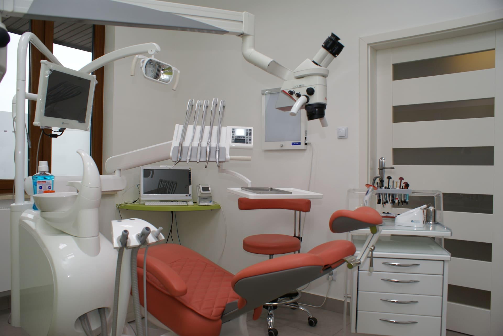
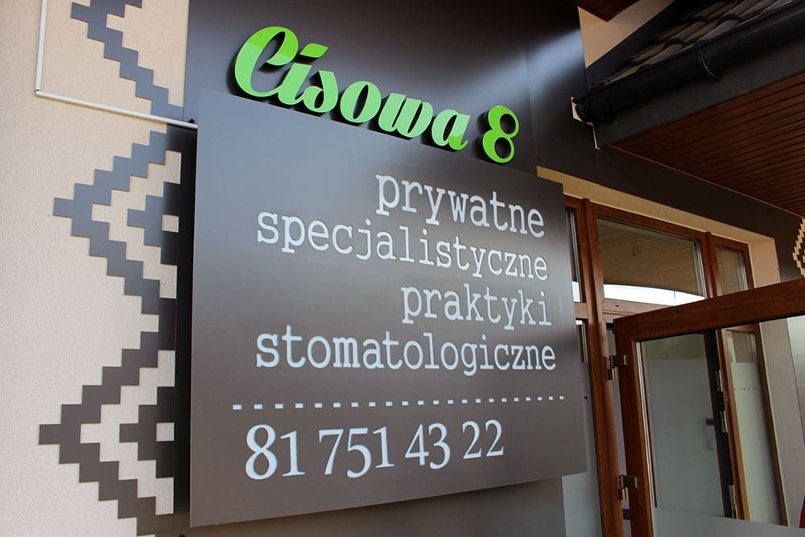
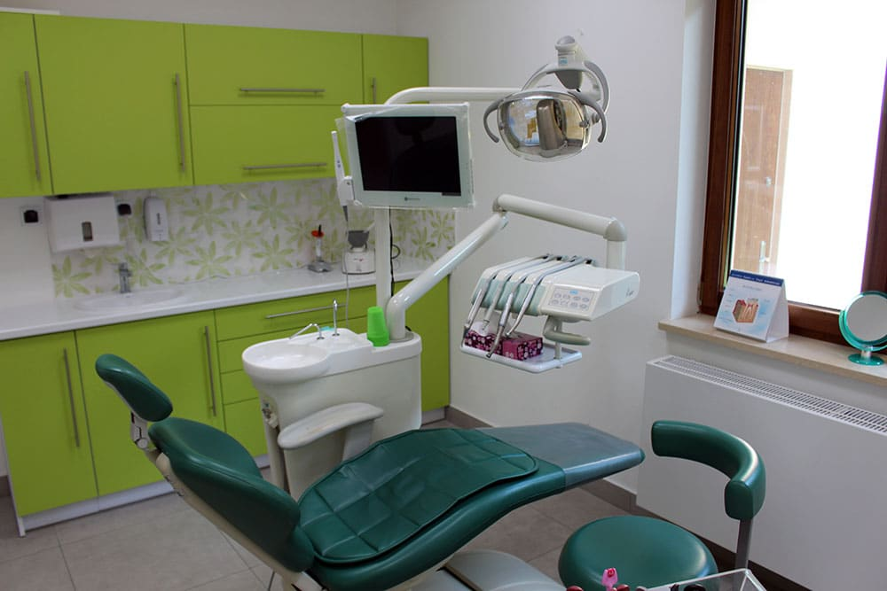

Zdrowy uśmiech w przyjaznym gabinecie
Profesjonalny poziom usług i indywidualne podejście do każdego pacjenta — zespół specjalistów, wykładowców Uniwersytetu Medycznego w Lublinie, w sercu Świdnika.
- Praca od rana do wieczora
- Znieczulenie, w tym komputerowe
- Ponad 20 lat doświadczenia

Oddzwonimy i ustalimy termin
- 20+lat doświadczenia
- 4lekarzy specjalistów
- 2wykładowczynie UM w Lublinie
- 6zakresów leczenia
Nasze usługi
Od rutynowego przeglądu po zaawansowane zabiegi — wszystko w jednym miejscu.
Pedodoncja
Profilaktyka próchnicy i leczenie zębów u dzieci.
Zobacz więcej →Periodontologia
Leczenie dziąseł i przyzębia, w tym nieinwazyjna terapia Vectorem.
Zobacz więcej →Stomatologia estetyczna
Licówki, wybielanie i zamykanie diastemy między zębami.
Zobacz więcej →Implantologia
Trwałe uzupełnienie braków zębowych implantami.
Zobacz więcej →Protetyka
Korony, mosty i protezy dopasowane do Twojego uśmiechu.
Zobacz więcej →Chirurgia stomatologiczna
Ekstrakcje, w tym zębów zatrzymanych, wspomagane laserem.
Zobacz więcej →Prosty proces, od pierwszego kontaktu do uśmiechu
Umów wizytę
Zadzwoń, napisz lub skorzystaj z formularza online — dobierzemy dogodny termin.
Konsultacja i diagnostyka
Dokładny przegląd, w razie potrzeby zdjęcie RTG, i propozycja planu leczenia.
Leczenie i opieka
Realizujemy plan leczenia i dbamy o komfort oraz efekty na kolejne lata.
Nasz gabinet
Nowoczesne wnętrze i sprzęt zaprojektowane z myślą o komforcie pacjentów.

Wejście — ul. Cisowa 8

Gabinet zabiegowy

Stanowisko zabiegowe
Czworo specjalistów
W tym dwie wykładowczynie Uniwersytetu Medycznego w Lublinie.
dr n. med. Jolanta Wojciechowicz
Specjalista chirurgii stomatologicznej i szczękowo-twarzowej, wykładowczyni UM w Lublinie
lek. stom. Beata Bednarczyk
Specjalista stomatologii zachowawczej i pedodoncji
dr n. med. Elżbieta Czelej
Leczenie protetyczne, wykładowczyni UM w Lublinie
lek. stom. Iwona Bielak
Specjalista stomatologii ogólnej
Co mówią nasi pacjenci
„Miejsce na prawdziwą opinię pacjentki lub pacjenta — do przeniesienia z profilu Google."
Pacjent gabinetu — TODO: CLIENT CONFIRMATION„Miejsce na prawdziwą opinię pacjentki lub pacjenta — do przeniesienia z profilu Google."
Pacjent gabinetu — TODO: CLIENT CONFIRMATION„Miejsce na prawdziwą opinię pacjentki lub pacjenta — do przeniesienia z profilu Google."
Pacjent gabinetu — TODO: CLIENT CONFIRMATIONZadbaj o swój uśmiech już dziś
Umów się na wizytę online lub zadzwoń do naszej recepcji — odpowiemy na wszystkie pytania.
- Adres
- ul. Cisowa 8, 21-040 Świdnik
- Godziny przyjęć
- Poniedziałek12:00–19:00 Wtorek08:00–19:00 Środa08:00–17:00 Czwartek08:00–19:00 Piątek08:00–12:00 Sobota i niedzielanieczynne